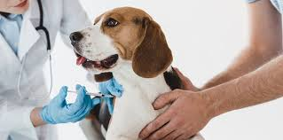
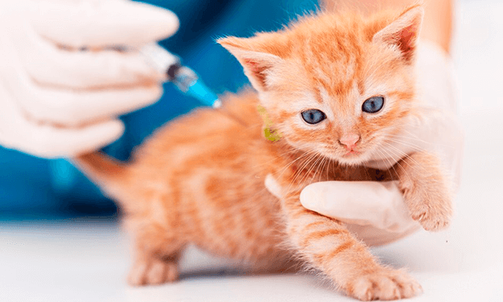

Vacunación para
Perros & Gatos
Prevenir enfermedades es fácil.
Un calendario de vacunación adecuado es la mejor defensa para evitar enfermedades graves que puedan poner en riesgo la vida de tu perro o gato.
- Previene enfermedades
- Protege a tu familia
- Ahorra en cuidados


